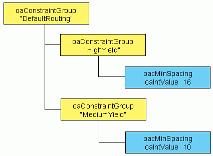

|
 |
 |
||||||
|
|
|
||||||
For yield improvement, there may be several sets of routing rules with varying levels of density and routability. Ideally, when there are several possible implementations for a particular net, the router would automatically chose between them. To do so, the router must understand the different sets of rules and the order in which the designer wants them to be considered.
To support this model, OpenAccess 2.2 replaced rules with constraints. Specifically, the oaRule and oaRouteSpec classes have been replaced by the more generalized approach supported by the oaConstraint class.
Constraints can represent the OpenAccess 2.0 foundry rules, and user-defined constraints can represent any sort of new constraint. OpenAccess also provides many useful built-in constraints.
The following topics are covered in this document:
See also, the Programmers Guide article Creating and Modeling Process Rules and Constraints.
OpenAccess provides a flexible infrastructure for constraints (oaConstraints) that let's you
All constraints must have a constraint definition, oaConstraintDef. Individual constraints are placed in oaConstraintGroups. You can also place oaConstraintGroups in other oaConstraintGroups.
Objects that can take constraints have a default oaConstraintGroup that you can use to apply Constraints to that object. You can create oaConstraints, oaConstraintDefs, and oaConstraintGroups in oaDesign, oaTech, or oaWafer databases.
For more information, see Creating and Modeling Process Rules and Constraints.
Built-in constraints replace the oaRules and oaRouteSpecs from 2.0. For built-in constraints, the oaConstraintDef is predefined in OpenAccess.
To get a constraint def, use the get method on oaLayerConstraintDef, oaLayerPairConstraintDef, or oaSimpleConstraintDef.
For example:
oaSimpleConstraintDef * get(oaSimpleConstraintType type);
Then create an oaValue for the constraint:
oaIntValue * create(oaObject *database, oaInt4 value);
Next, create an oaConstraint with that ConstraintDef:
oaLayerConstraint * create(oaLayerNum layer, const oaLayerConstraintDef *def, oaValue *value);
Get the oaConstraintGroup that is to contain this oaConstraint (from oaTech):
oaConstraintGroup * getFoundryRules()
Add the oaConstraint to the oaConstraintGroup:
oaConstraintGroupMem * create (oaConstraintGroup *group, oaConstraint *constraint);
// Set the min width on Metal1 to a constant 14 DBU oaLayerConstraintDef *mindef = oaLayerConstraintDef::get(oacMinWidth); oaTech *tech = desgn->getTech(); oaIntValue *val14 = oaIntValue::create(tech, 14); oaLayerNum m1num = oaLayer::find(tech, “metal1”)->getNumber(); oaLayerConstraint *minwid = oaLayerConstraint::find(mindef, m1num, true); if (minwid) minwid->setValue(val14); else minwid = oaLayerConstraint::create(m1num, mindef, val14); oaConstraintGroup *fgrp = tech->getFoundryRules(); oaConstraintGroupMem::create(fgrp, minwid);
See Built-in Constraints in the Programmers Guide for a complete list of the 2.2 built-in constraints.
| 2.0 RouteSpec | 2.2 Constraint Type |
|---|---|
| oaRouteLayerSpec.width | oacMinWidth |
| oaRouteLayerSpec.spacing | oacMinSpacing |
| oaRouteLayerSpec.diagWidth | oacMinDiagonalWidth |
| oaRouteLayerSpec.diagSpacing | oacMinDiagonalSpacing |
| oaRouteLayerSpec.wireExt | oacMinWireExtension |
| oaRouteLayerSpecArray | oacValidRoutingLayers |
| oaViaSpecArray | oacValidRoutingVias |
An oaRouteSpec in 2.0 was created in an oaTech database and attached to an oaRoute, oaNet, or a oaCellView. This approach is replace by oaConstraintGroups in 2.2. You can include oaConstraintGroups in the default oaConstraintGroup for an oaRoute, oaNet, oaBlock, or the oaTech.
The 2.0 LEF default rules (from the LAYER information) become the LEFDefaultRouteSpec in 2.2. Also, the LEF and DEF NONDEFAULTRULEs map to an oaConstraintGroup with the given rule name.
oaConstraintGroups are the only mechanism for applying a constraint to an object. oaConstraintGroups provide a container that lets you reuse sets of rules on multiple objects. You can also set multiple levels of constraints such as “preferred rules” and “hard rules.” Every object that can have constraints has a default oaConstraintGroup. You get the default oaConstraintGroup from the object, you don’t create it.
You might create a constraint group using oaConstraintGroup::create if you need to set up multi-level constraints or when you want to create a group that you will reuse.
For more information about constraint groups, see Applying Constraints to Objects in the Programmers Guide.
oaConstraintGroups can contain other oaConstraintGroups -- they can form a tree of oaConstraintGroups. oaConstraintGroups are ordered, and a tree of constraints should be searched depth-first. A tree of constraints can have multiple copies of a given constraint type, in which case the order shows the precedence of the constraints.

There is a specific approach to use when determining how constraint groups apply to objects. See Determining Which Constraints Groups Apply to Objects in the Programmers Guide for details.
Constraints can be flagged as hard constraints with oaConstraint::setHard. Hard constraints must be met. All 2.0 oaRules would be considered hard.
In some situations, looser constraints should be allowed. For example, you might have a RAM cell that is custom designed so it has narrower shapes than the Foundry min width rule. To accommodate this, you can specify a oaConstraintGroup as an override using oaConstraintGroup::override, or you can create a new oaConstraintGroup and set the override parameter.
Many legacy flows use shapes on a recognition layer to indicate a region of the design where a particular set of rules applies. In OpenAccess 2.2, this is modeled with an oaAreaBoundary. You can add constraints to the oaConstraintGroup for the AreaBoundary.
Any of the oaValue value types can be used as constraint values.
Param rule types have been removed. Instead, any constraint can have params (oaConstraintParams) that are independent from its value type. Every ConstraintParam has an oaConstraintParamDef, which is a session object that defines the type of its value. oaConstraintParams use the same set of oaValue types that oaConstraints use.
Headers have names in OpenAccess 2.2. See the following methods for more information:
oa1DLookupTbl::getName(oaString &name) const;
oa2DLookupTbl::getRowName (oaString &name) const;
oa2DLookupTbl::getColName (oaString &name) const
Extrapolation types are available for both upper and lower ranges:
oaExtrapolateType getLowerExtrapolateType () const;
oaExtrapolateType getUpperExtrapolateType () const;
New interpolation types are available:
oacInclusiveSnapDownInterpolateType
oacInclusiveSnapUpInterpolateType
This models the LEF spacing rules more intuitively.
In OpenAccess 2.2, an oaDerivedLayer no longer has an error attribute. Instead, a layer can have an oacErrorLayer constraint to specify whether or not it is an error for a geometry to exist on the layer.
The oaMaterial class now has an oacRecognitionMaterial value, which means that shapes on this layer indicate places where some special condition applies in the design. oaMaterial exists on each oaPhysicalLayer.
The routing grid is stored as a layer constraint with an oaIntValue. See the following built-in constraints for more information:
oacHorizontalRouteGridPitch
oacHorizontalRouteGridOffset
oacVerticalRouteGridPitch
oacVerticalRouteGridOffset
oac135RouteGridPitch
oac135RouteGridOffset
oac45RouteGridPitch
oac45RouteGridOffset
Most tech attributes are now stored in the oaTech default oaConstraintGroup.
There are collections and iterators to get the contents of a given constraint group. This gives you all the constraints attached to a given object (starting from its default oaConstraintGroup) and also provides all the constraints stored in the oaTech default and foundry oaConstraintGroups.
There is a collection and iterator for all the oaConstraintGroups defined in a given database.
You can create your own constraints for many different purposes, including:
User-defined constraints are an extension to the built-in data model. As with any extension, it doesn’t promote interoperability. Your constraints may need oaAppDefs to express how they are applied.
User-defined constraints work like built-in constraints except that the oaConstraintDef is identified with a string, not an enum value:
oaSubtypeConstraintDef * create(oaString &name
oaSubset< oaType > &allowedValues,
oaSubset< oaType > &allowedObjects,
oaSubset< oaDBType > &allowedDB);
Where Subtype is Layer, LayerPair, or Simple.
The oaConstraintDef attributes are as follows:
oaType representation—This is the oaType of the oaConstraint subclass, such as oacSimpleConstraintType.
oaSubset< oaType > &allowedValues—This holds the oaTypes of the oaValue subclasses that can be placed on this constraint, such as oacFltValueType and oacInt1DTblValueType.
oaSubset< oaType > &allowedObjects—This is the set of object types that can have this constraint, such as oacStdViaType and oacRouteType.
oaSubset< oaDBType > &allowedDB—The database types, which can be any of oacDesignDBType, oacTechDBType, or oacWaferDBType.
Once you have defined the constraint, you can apply it in the same manner as the built-in constraints.

Copyright © 2003-2010 Cadence Design Systems, Inc.
All rights reserved.